x3
x3 x3
x3 x3
x3 x2
x2 x2
x2 x2
x2
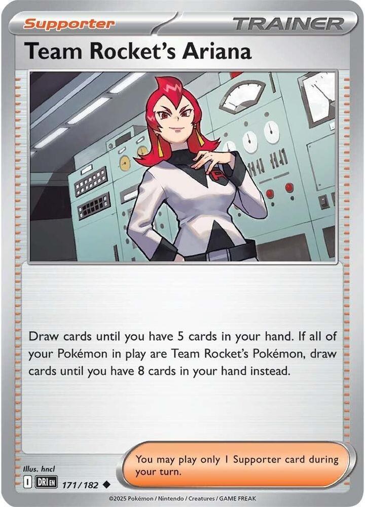
x4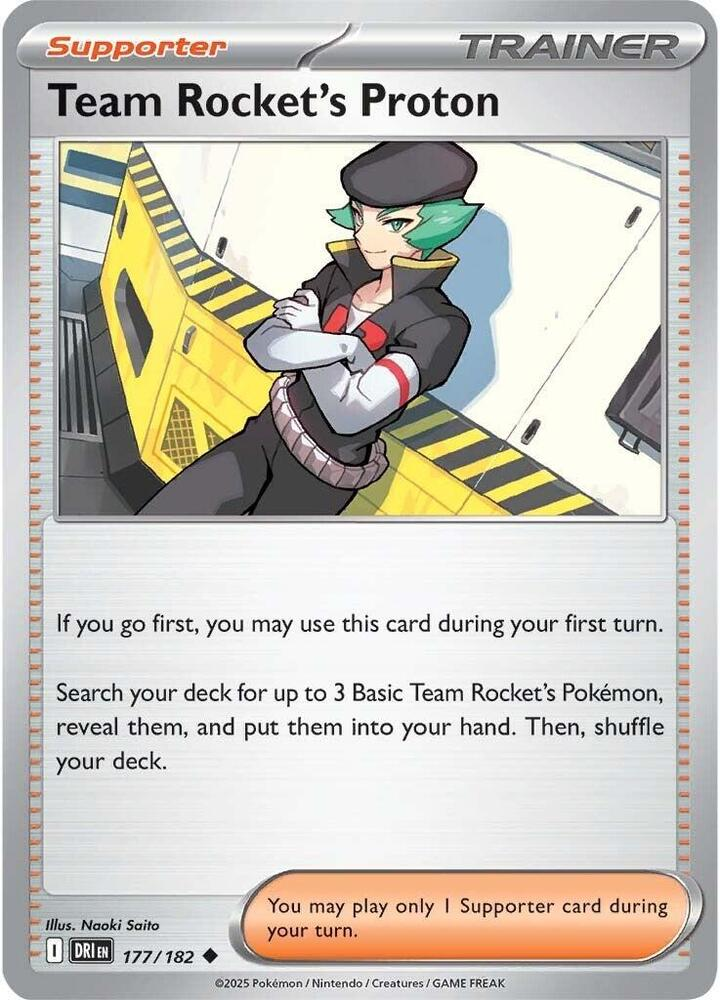
x3 x2
x2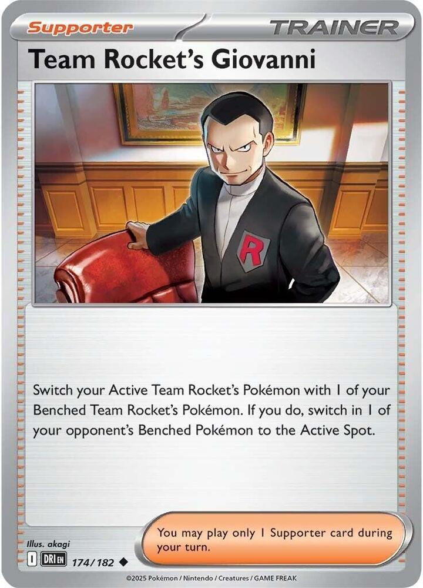
x2![Boss's Orders [Ghetsis]](./assets/654453_bosss-orders-ghetsis.jpg) x2
x2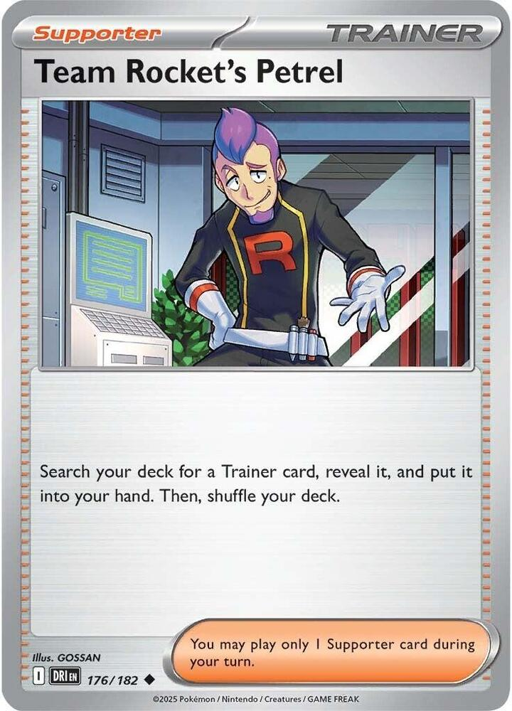
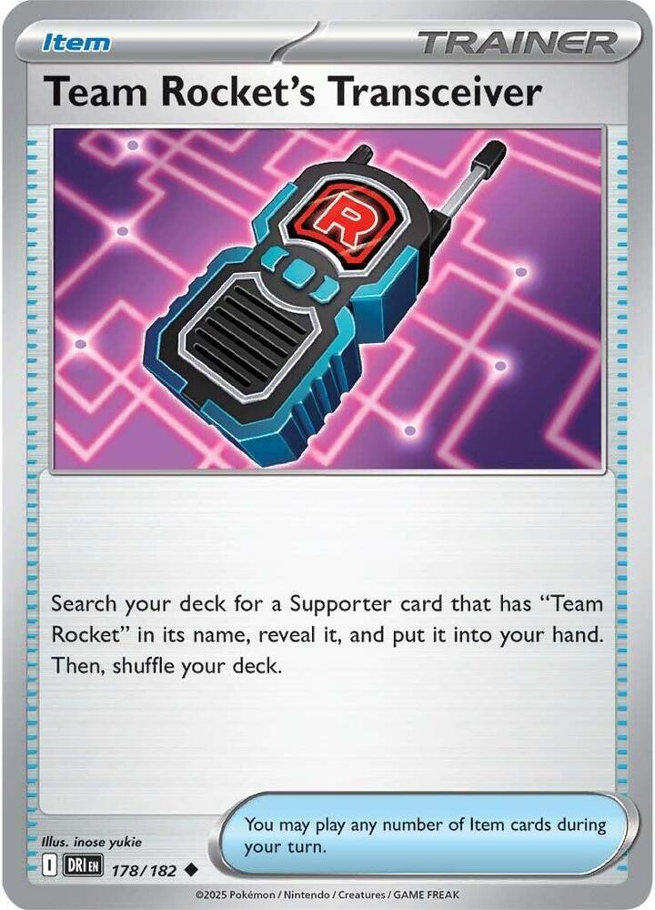
x4 x4
x4 x3
x3 x2
x2 x2
x2 x2
x2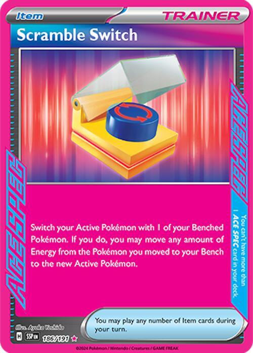
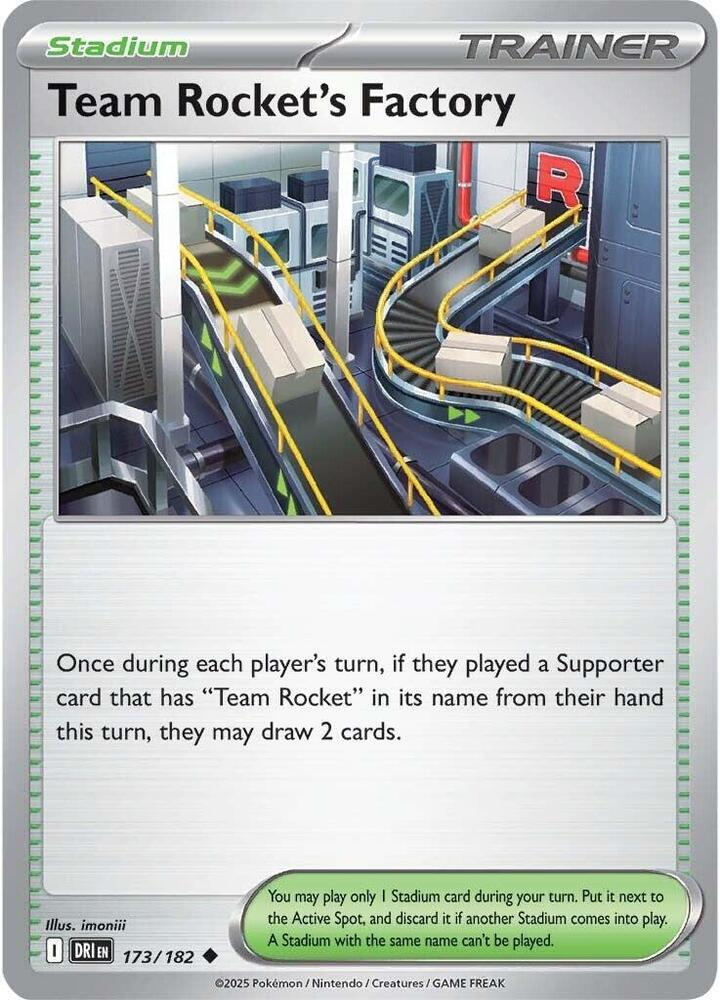
x2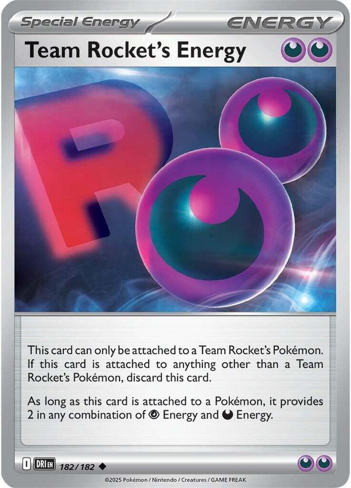
x4 x3
x3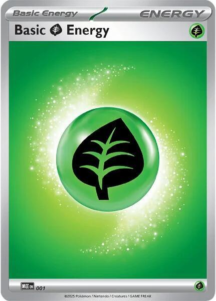
x3 Fox's Hostile Takeover
Fox's Hostile Takeover 

Game night · Team Rocket's Mewtwo ex, powered by a Spidops payroll
← back to all decksErasure Ball eats Energy off your own Bench, and Spidops hands it straight back.
Erasure Ball is 160 damage, plus 60 more for each Energy you discard from your Benched Pokémon, up to two. So the ceiling is 280 and the price is two Energy cards a turn, which is a price no normal deck can pay twice.
Team Rocket's Spidops has Charging Up, an Ability that attaches a Basic Energy from your discard pile to itself, once per turn. Two Spidops on the Bench recycle exactly the two Energy that Mewtwo just burned. The loop closes. You hit for 280 every single turn off the same two Energy cards going around in a circle, and neither one ever comes out of your deck again.
That is the whole deck. Everything else is here to get four Team Rocket's Pokémon on the board fast enough to turn Power Saver off.
Three things fall out of building it this way.
The draw engine is free. Team Rocket's Ariana draws you to 8 cards instead of 5 when every Pokémon you have in play is a Team Rocket's Pokémon. Since every Pokémon in this deck is one, the condition is never checked and never missed. Four copies of a draw-to-8 Supporter is a better engine than most decks get out of a Pokémon line, and it costs zero Bench space.
Nothing here is Fighting weak. Mewtwo, Crobat, Golbat, Zubat, and Articuno all resist Fighting for 30. Mega Zygarde ex swings Gaia Wave for 200 and gets 170 out of it, which does not kill anything in this deck that matters.
Eleven of the sixteen Pokémon give up one Prize. Only the Mewtwo and Crobat lines are worth two. Spidops trades a single Prize for whatever it kills.
x3x3x3x2x2x2
x4
x3x2
x2x2

x4x4x3x2x2x2

x2
x4x3
x3Pokémon (16)
| Qty | Card | Set | Number | Reg |
|---|---|---|---|---|
| 3 | Team Rocket's Mewtwo ex | Destined Rivals | 081 | I |
| 3 | Team Rocket's Tarountula | Destined Rivals | 019 | I |
| 3 | Team Rocket's Spidops | Destined Rivals | 020 | I |
| 2 | Team Rocket's Zubat | Destined Rivals | 120 | I |
| 2 | Team Rocket's Golbat | Destined Rivals | 121 | I |
| 2 | Team Rocket's Crobat ex | Destined Rivals | 122 | I |
| 1 | Team Rocket's Articuno | Destined Rivals | 051 | I |
Trainers (34)
| Qty | Card | Type | Set | Number | Reg |
|---|---|---|---|---|---|
| 4 | Team Rocket's Ariana | Supporter | Destined Rivals | 171 | I |
| 3 | Team Rocket's Proton | Supporter | Destined Rivals | 177 | I |
| 2 | Lillie's Determination | Supporter | Mega Evolution | 119 | I |
| 2 | Team Rocket's Giovanni | Supporter | Destined Rivals | 174 | I |
| 2 | Boss's Orders | Supporter | Mega Evolution | 114 | I |
| 1 | Team Rocket's Petrel | Supporter | Destined Rivals | 176 | I |
| 4 | Team Rocket's Transceiver | Item | Destined Rivals | 178 | I |
| 4 | Ultra Ball | Item | Mega Evolution | 131 | I |
| 3 | Buddy-Buddy Poffin | Item | Temporal Forces | 144 | H |
| 2 | Rare Candy | Item | Mega Evolution | 125 | I |
| 2 | Switch | Item | Mega Evolution | 130 | I |
| 2 | Night Stretcher | Item | Shrouded Fable | 061 | H |
| 1 | Scramble Switch | Item | Surging Sparks | 186 | H |
| 2 | Team Rocket's Factory | Stadium | Destined Rivals | 173 | I |
Energy (10)
| Qty | Card | Set | Number | Reg |
|---|---|---|---|---|
| 4 | Team Rocket's Energy | Destined Rivals | 182 | I |
| 3 | Basic Psychic Energy | Mega Evolution Energies | 005 | - |
| 3 | Basic Grass Energy | Mega Evolution Energies | 001 | - |
16 + 34 + 10 = 60. ✓
Basics: 9 (3 Mewtwo ex, 3 Tarountula, 2 Zubat, 1 Articuno). That sits inside the 75-85% band for opening with something playable, and every one of the nine counts toward Power Saver.


 Psychic
Psychic Darkness ×2
Darkness ×2 Fighting -30
Fighting -30 3
3 legal (Reg I)Erasure Ball (160+) - You may discard up to 2 Energy from your Benched Pokémon. This attack does 60 more damage for each card you discarded in this way.
legal (Reg I)Erasure Ball (160+) - You may discard up to 2 Energy from your Benched Pokémon. This attack does 60 more damage for each card you discarded in this way.Three copies, and it is a Basic, so there is no line to build and nothing to whiff. Three means all of them prized is a non-event and losing one mid-game does not end the deck. 280 HP is the best HP per setup cost in the box, and Retreat 3 with a Darkness Weakness is what you pay for it.
Power Saver is the real cost. Mewtwo cannot attack unless you have 4 or more Team Rocket's Pokémon in play, and the Active counts toward that, so the number to reach is Mewtwo plus three on the Bench. One Proton gets you there out of a single card.
Erasure Ball discards from your Benched Pokémon, never from Mewtwo itself. 160 base, 60 more for each Energy discarded, up to two, so 280 is the ceiling. One Team Rocket's Energy plus any one Basic Energy pays the whole cost. Two attachments and Mewtwo is online.

 Grass
Grass Fire ×21legal (Reg I)Take Down (30) - This Pokémon also does 10 damage to itself.
Fire ×21legal (Reg I)Take Down (30) - This Pokémon also does 10 damage to itself.Three copies, because the Bench wants two Spidops standing at all times and the line cannot afford to draw the wrong half. 50 HP puts it inside Buddy-Buddy Poffin, and it is what you want Poffin to find on turn one. Take Down is 30 damage and 10 to itself, occasionally the right turn-one play and usually not.
 GrassFire ×22legal (Reg I)Rocket Rush (30x) - This attack does 30 damage for each of your Team Rocket's Pokémon in play.
GrassFire ×22legal (Reg I)Rocket Rush (30x) - This attack does 30 damage for each of your Team Rocket's Pokémon in play.The card that makes the deck a deck. Three copies is thicker than a normal Stage 1 line, and deliberately so: Spidops is not an attacker you are building toward, it is a resource you want two of on the Bench for the whole game.
Charging Up attaches a Basic Energy from your discard pile to this Pokémon, once during your turn. Two Spidops is two attachments a turn that cost nothing from hand and nothing from deck. That is the entire engine, and The Engine is worth reading twice.
Rocket Rush is for 30 per Team Rocket's Pokémon in play, so a full board is 180 off a single-Prize Stage 1. 130 HP and a Fire Weakness mean it does not want to be Active against a Charizard, but as a Benched battery it is untouchable without a gust.
 Darkness
Darkness Lightning ×2Fighting -301legal (Reg I)Poison Spray - Your opponent's Active Pokémon is now Poisoned.
Lightning ×2Fighting -301legal (Reg I)Poison Spray - Your opponent's Active Pokémon is now Poisoned.Two copies, the bottom of the thinnest line in the deck. 50 HP, so Poffin gets it. Poison Spray needs no coin flip and costs one Darkness, which is 10 damage a turn you did nothing to earn.
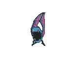
 DarknessLightning ×2Fighting -301legal (Reg I)Confuse Ray (30) - Your opponent's Active Pokémon is now Confused.
DarknessLightning ×2Fighting -301legal (Reg I)Confuse Ray (30) - Your opponent's Active Pokémon is now Confused.Sneaky Bite puts 2 damage counters on one of their Pokémon when you play it from your hand to evolve. Free, and it is the whole reason the middle of the line is worth running rather than skipping. Evolving Zubat by hand through Golbat gets you both Sneaky Bite and Biting Spree, 60 total chip, where Rare Candy skips Golbat and gets you only 40. Candy is the speed option, not the better one.
DarknessLightning ×2Fighting -301legal (Reg I)Assassin's Return (120) - You may put this Pokémon into your hand. (Discard all cards attached to this Pokémon.)The plan B and the chip damage in one card. 310 HP on a Stage 2 that is weak to Lightning instead of Darkness, which patches the exact hole Mewtwo has, and it resists Fighting like the rest of the board.
Biting Spree triggers when you play it from your hand to evolve, Rare Candy included: 2 damage counters on each of two of their Pokémon, Bench included. That chip is what carries Mewtwo's 280 over the 310 and 350 HP tier.
Assassin's Return is for 120, then optionally back to your hand with everything attached discarded. The bounce is a heal and an escape at once, and it resets Biting Spree for the next time you play it down. It is also expensive in a way the card does not say: Team Rocket's Energy is the only Darkness in this deck, so every bounce discards one of the four for good.
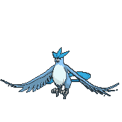
 WaterLightning ×2Fighting -301legal (Reg I)Dark Frost (60+) - If this Pokémon has any Team Rocket's Energy attached, this attack does 60 more damage.
WaterLightning ×2Fighting -301legal (Reg I)Dark Frost (60+) - If this Pokémon has any Team Rocket's Energy attached, this attack does 60 more damage.One copy, and it never attacks. Repelling Veil prevents all effects of attacks used by your opponent's Pokémon done to your Basic Team Rocket's Pokémon. Mewtwo, Tarountula, and Zubat are Basic, so all three are covered: no Confusion on Mewtwo, no Poison, no forced switching, no discarding your attached Energy.
Read the two words it does not cover. Damage is not an effect, so damage still lands. Abilities are not attacks, so anything that places damage counters from an Ability sails straight past it. Dark Frost costs and this deck runs no Water, so Articuno spends the whole game on the Bench turning off the annoying half of the other deck, which at this table is most of what loses you games.
legal (Reg I)Draw until you have 5 cards in hand, or 8 if every Pokémon you have in play is a Team Rocket's Pokémon. In this deck that clause is always true, so this is a draw-to-8 Supporter at four copies and it costs zero Bench space. It is the single best reason not to splash anything outside the brand.
legal (Reg I)The only Supporter here you may play on your first turn going first. Search for up to 3 Basic Team Rocket's Pokémon and put them in your hand: Mewtwo, Tarountula, Zubat, and Articuno all qualify, so one card can set up your entire Power Saver count. Three copies, and Transceiver makes the real number closer to seven.
 legal (Reg I)
legal (Reg I)Shuffle your hand into your deck, then draw 6, or 8 while you still have all six Prize cards. Two copies, and it is the reset for the turn Ariana is dead because your hand is already full of cards you cannot use. Ariana adds to a stuck hand; this one throws the hand away first. Transceiver cannot find it, so both copies have to be drawn.
legal (Reg I)Switch your Active Team Rocket's Pokémon with a Benched one, then drag one of theirs up. Both halves are gated on your side being Team Rocket's Pokémon, which is free here. Two copies, and this is how a tapped-out Mewtwo leaves the Active spot without paying three Energy of retreat, because it does the escape and the gust in one card.
legal (Reg I)Switch in 1 of your opponent's Benched Pokémon to the Active Spot. Two copies alongside the Giovanni, because every point of chip damage this deck spreads is worthless until you can choose what dies. Giovanni does more, but it needs a Benched Team Rocket's Pokémon to switch to and this does not, which is the difference on a board you have just had knocked apart. Neither one turns on Team Rocket's Factory.
legal (Reg I)Search your deck for any Trainer card. One copy, because what you want it for is the Scramble Switch or the second Team Rocket's Factory, and both of those are one-offs by nature. It is a Team Rocket Supporter, so Transceiver finds it and the Factory pays you for playing it.
legal (Reg I)An Item that searches out any Supporter with "Team Rocket" in its name. Four copies, which puts your real Ariana count closer to eight and your real Proton count closer to seven. Turn one going first it fetches Proton and you play it the same turn. It cannot find Lillie's Determination or Boss's Orders.
legal (Reg I)Discard 2 other cards from your hand, then search your deck for any Pokémon. Four copies. It is the only card here that finds Crobat ex, and the discard is less a cost than a second use: pitching a Basic Energy to it is Spidops's first meal and saves you a whole turn of attaching by hand. See game plan 3.
 legal (Reg H)
legal (Reg H)Search out up to 2 Basic Pokémon with 70 HP or less and put them straight onto your Bench. Tarountula and Zubat are 50 each, so one card drops two bodies toward the Power Saver count and starts both evolution lines at once. Three copies. Mewtwo at 280 and Articuno at 120 are out of range, which is the only reason this is not a four.
legal (Reg I)Evolve a Basic straight to Stage 2, skipping the Stage 1. Two copies, and here that means Zubat into Crobat ex on the turn you need a 310 HP body immediately. It costs you the Sneaky Bite you would have got on the way past, so it buys a turn and gives up 20 chip. Not playable on your first turn, or on a Basic you benched this turn.
legal (Reg I)Switch your Active Pokémon with 1 of your Benched Pokémon. Two copies, and the cheapest of the three answers to a Mewtwo stranded Active on Retreat 3. It is free and it leaves the Energy behind, which is exactly the case where you want Giovanni or the Scramble Switch instead. See game plan 5.
 legal (Reg H)
legal (Reg H)Put a Pokémon or a Basic Energy card from your discard pile into your hand. Two copies, and the word Basic is the one that matters: Team Rocket's Energy is special Energy and this cannot touch it. What it actually recovers is a dead Spidops, or the Psychic and Grass that ride the loop.

 ACE SPEC Rarelegal (Reg H)
ACE SPEC Rarelegal (Reg H)The one ACE SPEC, and one per deck across the whole list. Switch your Active with a Benched Pokémon, then move any amount of Energy from the one you just benched to the new Active. On a Mewtwo about to be knocked out that is a full Energy transplant onto a fresh one, and it dodges the knockout in the same card. Save it for the turn it wins the game.
legal (Reg I)Stadium. Once during each player's turn, if they played a Supporter with "Team Rocket" in its name that turn, they may draw 2. Ariana, Proton, Giovanni, and Petrel all qualify, which is nearly every turn of the game; Lillie's Determination and Boss's Orders do not. The clause is symmetrical and almost never helps the other side, because almost nobody else is playing Team Rocket Supporters. Two copies, since a Stadium only stays down until someone replaces it.
Energy and Energy.legal (Reg I)Provides 2 Energy in any mix of Psychic and Darkness, and attaches only to a Team Rocket's Pokémon, which here means anything. Four copies, and they live on Mewtwo, because one card covers two thirds of Erasure Ball by itself.
It is also the deck's only Darkness. Every cost on the board is paid out of these four cards: Poison Spray, Confuse Ray, and both halves of Assassin's Return. Bouncing Crobat ex spends one permanently.
Two rules to hold on to. Spidops cannot recycle it, because Charging Up only takes Basic Energy, and Night Stretcher cannot get it back either. Keep it on Mewtwo and keep the Basic Energy on the Bench.
legalThree, and their job is to ride the Spidops loop rather than to pay for anything from hand. Erasure Ball is , so a Psychic sitting on a Benched Spidops is both the fuel that gets discarded and the 60 extra damage it turns into. Basic Energy never rotates, and any English print is legal.
legalThree, and Grass rather than three more Psychic for one reason: Rocket Rush costs , so a Spidops holding recycled Grass can attack for 180 on a full board on the turns Mewtwo cannot. Everything else about them is identical, since Charging Up does not care which Basic Energy it picks up and the in Erasure Ball takes either.
Read this part twice. It is the reason the deck exists and it is not obvious from the cards.
Erasure Ball discards Energy from your Benched Pokémon, never from Mewtwo itself. So the Energy you spend to pump the attack and the Energy you spend to pay for the attack are two different piles, and only one of them gets burned.
Charging Up attaches a Basic Energy from your discard pile to Spidops. It is an Ability, not an attack, and it is once per turn per Spidops. So two Spidops give you two attachments a turn that cost you nothing from hand and nothing from deck.
Put those together and the sequence is:
The deck only ever needs two Basic Energy cards in play to hold 280 damage a turn, and they are the same two cards every turn.
| Source | Cost | Damage |
|---|---|---|
| Erasure Ball, nothing discarded | | 160 |
| Erasure Ball, one Bench Energy discarded | | 220 |
| Erasure Ball, two Bench Energy discarded | | 280 |
| Rocket Rush, six Team Rocket's Pokémon in play | | 180 |
| Assassin's Return | | 120, then bounce to hand |
| Confuse Ray | | 30 and Confusion |
| Biting Spree, on evolving | free | 20 + 20, any two targets |
| Sneaky Bite, on evolving | free | 20, any target |
| Poison Spray | | Poison, 10 a turn |
The chip is what carries 280 over the top HP tier.
| Target | HP | The line |
|---|---|---|
| Flareon ex | 270 | Erasure Ball 280 outright |
| Team Rocket's Mewtwo ex | 280 | Erasure Ball 280 outright |
| Team Rocket's Crobat ex | 310 | Erasure Ball 280 plus Biting Spree 40 |
| Mega Zygarde ex, after Gaia Wave | 310 | Erasure Ball 280 cut to 250, plus Biting Spree 40 and Sneaky Bite 20 |
| Mega Gengar ex | 350 | Erasure Ball 280, Biting Spree 40, Sneaky Bite 20, one turn of Poison 10 |
| Mega Chandelure ex | 350 | Assassin's Return 240 into Darkness Weakness, then 110 more from chip or a second swing |
| Charizard, Vivid Voltage | 170 | Erasure Ball at 220, or Rocket Rush on a full board |
| Gengar, Perfect Order | 130 | Rocket Rush 180 for one Prize |
There is no Prize denial in this deck. Mega Gengar ex is out and there is no Legacy Energy in it, so the trade is honest and the maths are the plain kind.
| Your Pokémon | Prizes given up | HP |
|---|---|---|
| Team Rocket's Tarountula | 1 | 50 |
| Team Rocket's Zubat | 1 | 50 |
| Team Rocket's Golbat | 1 | 80 |
| Team Rocket's Articuno | 1 | 120 |
| Team Rocket's Spidops | 1 | 130 |
| Team Rocket's Mewtwo ex | 2 | 280 |
| Team Rocket's Crobat ex | 2 | 310 |
Eleven of the sixteen Pokémon are worth one Prize. The shape you want is Mewtwo killing something worth two every turn while the only things they can reach are Spidops worth one.
Weakness matters more here than Prize denial does, so keep this table in your head:
| Your Pokémon | Weakness | Resistance |
|---|---|---|
| Team Rocket's Mewtwo ex | Darkness ×2 | Fighting -30 |
| Team Rocket's Crobat ex, Golbat, Zubat | Lightning ×2 | Fighting -30 |
| Team Rocket's Articuno | Lightning ×2 | Fighting -30 |
| Team Rocket's Tarountula, Spidops | Fire ×2 | none |
Nothing in the deck is Fighting weak and 10 of the 16 Pokémon resist it. That is the best structural matchup you have.
Going first, Transceiver into Proton, then Proton for Mewtwo plus two more Basics. That is your Power Saver count in one turn out of two cards. Bench Tarountula whatever else happens, because Spidops is a turn behind everything else.
Going second you can attack, so lead Poffin for Tarountula and Zubat, attach Team Rocket's Energy to Mewtwo, and take the free damage where you can get it.
Team Rocket's Energy plus any Basic Energy is the whole cost of Erasure Ball. That is turn two if you have both, turn three if you do not. Do not wait for the Bench fuel before you start attacking; 160 into something small is still a Prize.
The loop cannot start until there is a Basic Energy in your discard pile. Ultra Ball is the fastest way to put one there, so when you have a spare Energy in hand and an Ultra Ball to play, that is the discard you want. Once one Spidops is holding a recycled Energy, Erasure Ball is 220 forever without you spending anything.
Two Spidops holding one each is 280 forever. That is the whole game.
Zubat to Golbat to Crobat ex spread over two turns gets you Sneaky Bite and Biting Spree, 60 damage for free. Rare Candy gets you there a turn earlier and only 40. Use Candy when you need the 310 HP body right now, and use the slow route when you are setting up anyway.
When Mewtwo is stuck Active with three Energy on it and something is about to kill it, you have three outs and they are not the same. Switch is free but leaves the Energy behind. Giovanni switches and drags a target up, which is usually the best of them. Scramble Switch takes the Energy with you and is the one to save for the turn it wins the game.
If they are running Confusion, Poison, or anything that discards your Energy, get Articuno on the Bench in the first two turns. It costs you a Bench slot and buys total immunity to the annoying half of their deck.
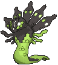
Your best matchup, and it is structural. Gaia Wave is 200 and doubles into Fighting Weakness, of which you have none. Mewtwo resists Fighting and takes 170, so it survives and swings back for 280. Crobat takes 170 on 310 HP and then bounces the damage away entirely.
Mega Zygarde ex is 310 HP and worth three Prizes, so killing it twice wins the game. Killing it once takes a little care, because Gaia Wave leaves it taking 30 less damage on your next turn. A full 280 Erasure Ball lands as 250. The chip covers the rest, and Biting Spree and Sneaky Bite place damage counters rather than dealing attack damage, so the reduction does not touch them. 250 plus 40 plus 20 is exactly 310.
The other attack is worse for you. Nullifying Zero flips a coin per Pokémon you have and does 150 to each heads, which reaches your Benched Spidops. Keep the Bench at what you need and no wider.

Watch the Spidops. 130 HP with a Fire Weakness means Royal Blaze kills your battery through a gust, and losing both Spidops shuts the engine down. Keep a third Tarountula in reserve, and use Night Stretcher on a Spidops rather than on Mewtwo when the choice comes up.
Charizard is 170 HP, so a 220 Erasure Ball is enough and you should not spend the second Energy for it.

Flareon ex is 270 and Erasure Ball at full is 280, so it is a clean one-shot the moment it is Active. It cannot be touched on the Bench, because its Tera ability prevents all damage from attacks while it sits there. That makes Boss's Orders and Team Rocket's Giovanni your only way to start the fight, and it makes the chip damage worthless against it.
Respect Carnelian. 280 damage kills a Mewtwo ex on the nose. Flareon cannot attack the turn after, so the trade is one Mewtwo for one Flareon plus a free turn, which is fine as long as you have the second Mewtwo ready.
The Fire Weakness on your Spidops line is the same problem it is against Charizard, so the same answer applies.


Your worst matchup, and it is worth knowing why. Mewtwo is weak to Darkness, so Void Gale at 230 doubles to 460 and one-shots a 280 HP Basic without any setup at all. Do not lead with Mewtwo into a Darkness board.
Crobat ex is the card that plays this matchup. 310 HP, no Darkness Weakness, and Assassin's Return deletes the damage. Chip with Biting Spree and Sneaky Bite, attack with Crobat, and only bring Mewtwo out for the turn it takes a Prize and gets switched straight back with Giovanni.

The second deck at this table that one-shots Mewtwo, and this one does it without a Weakness. See the lantern deck's own page for the other side of it.
Never leave Mewtwo Active. Binding Flame adds 1 to your Active's Retreat Cost from anywhere on their board, and Phantom Maze does 130 plus 50 for each in that cost. Mewtwo at Retreat 3 becomes Retreat 4, which is 330 into 280 HP, for two Psychic Energy and no setup. Crobat ex retreats for 1, takes 230 on 310 HP, and bounces the damage away.
Every Pokémon in that deck is Darkness Weakness ×2. Chandelure, Gourgeist ex, Dusknoir, Lampent, and Litwick all double it, and Assassin's Return is 120, which lands as 240. That kills Dusknoir at 160 and every small body in the lantern line outright, and takes 240 of the 270 off a Gourgeist ex. Crobat ex is your attacker here. Save Erasure Ball for the turn Gourgeist ex is Active, where 280 clears its 270.
Froslass taxes your whole board. Freezing Shroud puts a damage counter on every Pokémon that has an Ability at each Checkup, both sides. Mewtwo, Spidops, Golbat, Crobat ex, and Articuno all have one, so five of your bodies bleed 10 a turn and the Spidops battery is on a clock from the moment Froslass lands. Only Tarountula and Zubat are immune. Articuno does not cover this and it does not cover Dusknoir's Cursed Blast either, because Repelling Veil stops effects of attacks and both of those are Abilities.
Your own chip feeds them. Horrifying Rondo does 30 plus 50 for each of their Benched Pokémon carrying damage counters, and Biting Spree is how those counters get there. Against this deck, spend the chip on something you are about to knock out, or do not spend it at all.
Three things to watch, and the exact ratio each one points at.
Mewtwo cannot attack on turn two. If Power Saver is what is stopping you rather than Energy, you are short on early Bench bodies. Go to 4 Team Rocket's Proton over the Petrel, and cut a Rare Candy for a fourth Buddy-Buddy Poffin. This is the most likely problem in the first few games.
The Spidops loop never starts. If Erasure Ball keeps coming in at 160, the Energy is not reaching the discard pile. Watch whether you are pitching Energy to Ultra Ball; if you are and it still stalls, add a Basic Energy over the Petrel and go to 11.
Mewtwo is stranded Active with three Energy on it. If retreat is what loses you games rather than damage, go to 3 Switch by cutting a Night Stretcher, and consider a second Team Rocket's Giovanni over a Boss's Orders since Giovanni does both jobs at once.
Two smaller notes. If Articuno is a dead card two games running, the table is not playing effects and that slot wants to be a fourth Tarountula. And if you are drawing Biting Spree damage but never converting it into a knockout, you are short on gust and the answer is a third Boss's Orders, not more chip.
Nothing. The list above is built entirely out of cards already in the box. The block below is the upgrade path if you want to thicken it later.
| Card | Own | Need | Buy | Note |
|---|---|---|---|---|
| 2 | 3 | 1 | third copy, the Crobat line is the thinnest thing here |
| 2 | 3 | 1 | third copy, and the better evolution route runs through it |
| 2 | 3 | 1 | third copy |
| Basic Psychic Energy MEE: Mega Evolution Energies 5 | 15 | 4 | ✓ | a fourth Psychic, free out of any bulk lot |
 | 0 | 1 | 1 | optional ace spec swap, see below |
| Total to buy | 4 |